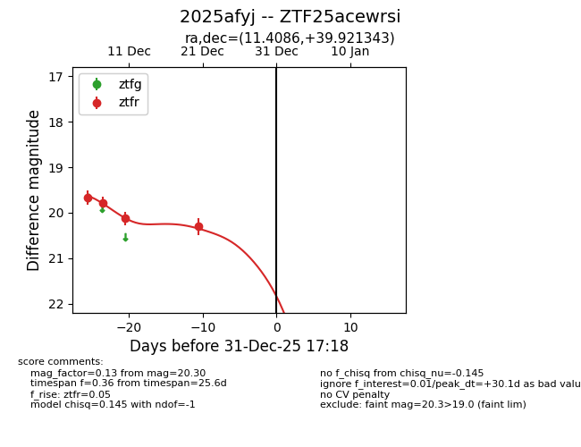
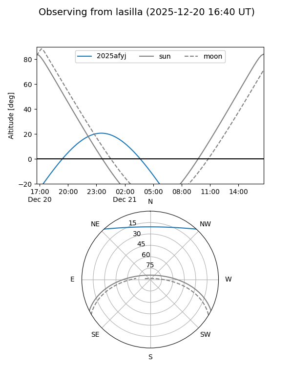
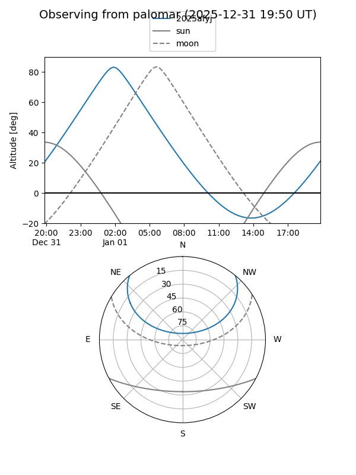
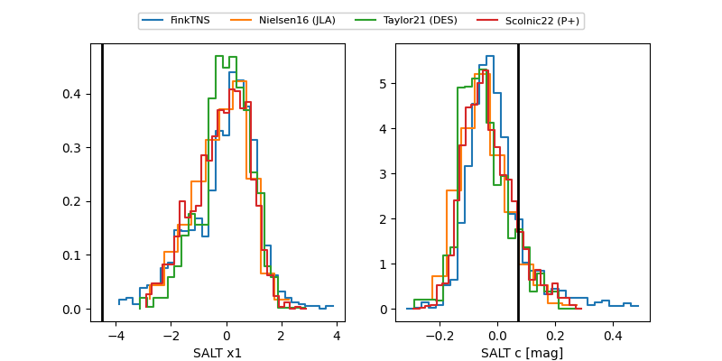

2025afyj
Target 2025afyj at 2025-12-31 18:00
Aliases and brokers:
FINK: link
Lasair: link
ALeRCE: link
TNS: link
YSE: link
alt names
ZTF25acewrsi (ztf,fink_ztf)
2025afyj (tns,yse)
Coordinates:
equatorial (ra, dec) = 11.4086,+39.92134
equatorial (HMS+DMS) = 00:45:38.06,+39:55:16.83
galactic (l, b) = (121.7237,-22.93679)
Flags:
Photometry:
last ztfr=20.30
4 ztfr detections
Lightcurve

Visibility


Additional plots
